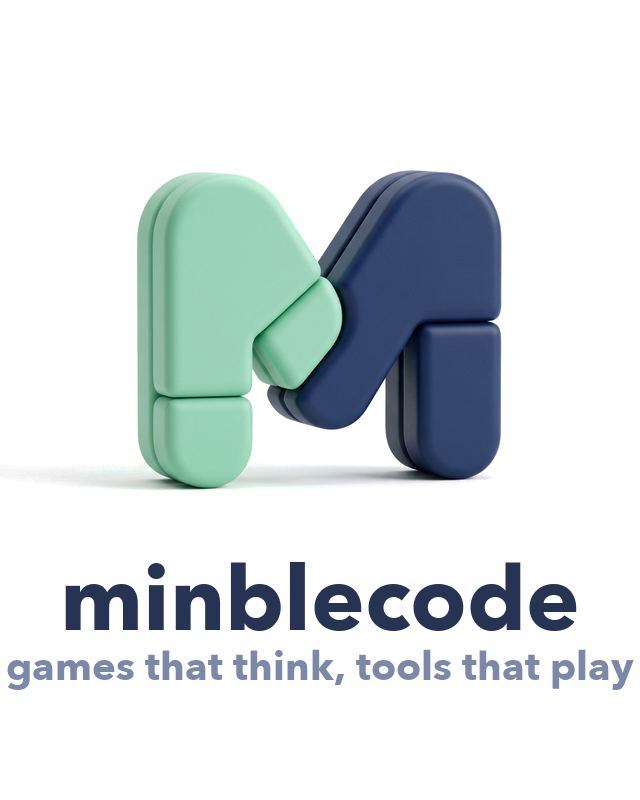

먼저 선명하게
무엇을 왜 만드는지부터 정리하고, 필요한 기능만 남겨 제품의 중심을 또렷하게 잡습니다.
Quiet indie tech studio · Games that think, tools that play
Minblcode는 Sudoku 게임 Poku와 찰떡 제시어 퀴즈를 만들었고, 지금은 전자액자 앱을 개발하고 있습니다.

the official minblcode mark
Approach
Minblcode는 규모보다 완성도의 밀도를 중요하게 생각합니다. 그래서 제품마다 같은 태도를 반복합니다.
무엇을 왜 만드는지부터 정리하고, 필요한 기능만 남겨 제품의 중심을 또렷하게 잡습니다.
게임이든 도구든 쓰는 감각이 살아 있어야 오래 남는다고 믿습니다. 사용성 안에 리듬을 넣습니다.
작게 시작해도 마감은 가볍게 두지 않습니다. 마지막 화면의 감도까지 책임지는 쪽을 택합니다.
Work
설명보다 먼저 믿음을 만드는 건 결국 작업물입니다. 현재까지의 결과를 짧고 명확하게 정리했습니다.
Launched
logic puzzle game
템포와 몰입감을 살린 Sudoku 게임. 단순한 퍼즐을 더 생각 있게 즐기도록 만든 Minblcode의 첫 게임 프로젝트입니다.
Launched
party word game
빠르게 즐기고 바로 웃을 수 있는 제시어 퀴즈. 친구들과의 가벼운 플레이에 맞춘 감각적인 캐주얼 퀴즈 게임입니다.
In Progress
digital frame app
사진과 순간을 조용하게 전시하는 디지털 프레임 경험을 준비하고 있습니다. 보기 좋은 화면만이 아니라, 오래 켜두고 싶은 분위기까지 함께 설계합니다.
Story
Minblcode라는 이름에는 mint block code라는 의미가 담겨 있습니다.
작은 팀이더라도 더 선명한 아이디어와 더 오래 쓰일 소프트웨어를 만들고 싶다는 태도를 함께 담았습니다. 작게 시작해도 허술하지 않게, 작게 보여도 인상이 남는 제품을 만드는 팀이고 싶습니다.
“작게 시작해도 브랜드 인상은 또렷하게. Minblcode는 그 감도를 제품 안까지 이어가고 싶습니다.”
Contact
제품 이야기, 협업 제안, 간단한 인사 모두 환영합니다. 가장 간단한 연락 방식 하나만 남겨두었습니다.
minblecode@gmail.com